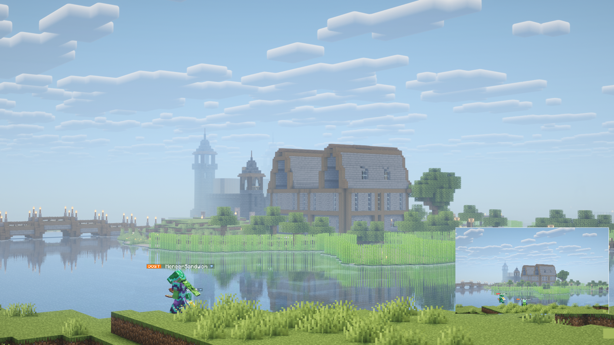
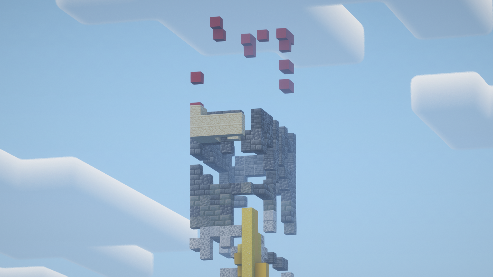
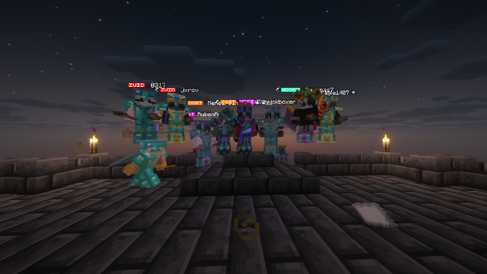
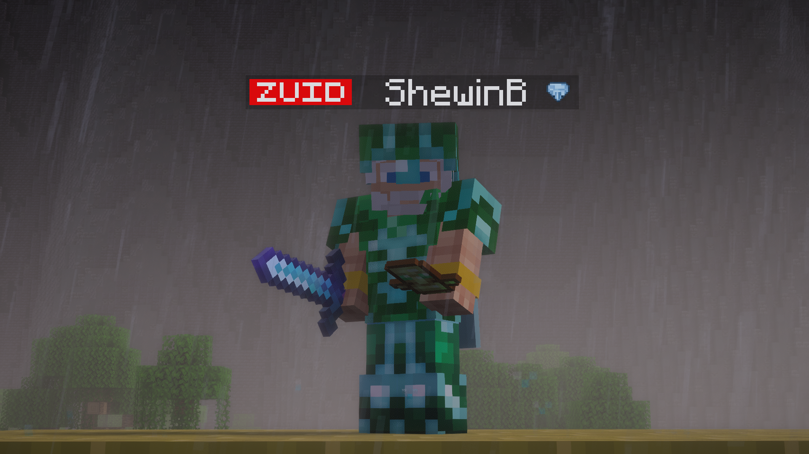

Het nieuws uit Oost & omstreken
De Oostelijke Krant
 JaymianLee
JaymianLeeBlacklist, jacht en verbrijzelde symbolen
20-02-2026 · Locaties: Zuid, Oost, West, Vulkaan
Op Eiland Zuid staat nog altijd slechts één naam op de blacklist; hij zou naar Oost willen reizen, maar de leiders vinden dat hij opgesloten moet worden totdat zijn plannen helder zijn.

Anonieme bronnen wijzen op een jacht die skoebidoemannen en zijn crew op Kale zijn begonnen. itsjeboykale werd volgens meldingen in een 10 tegen 3 bekogeld nadat Noootje een locatie had gedeeld. De twee andere leden van Kale’s groep overleefden; Kale zelf viel ten prooi aan de overmacht.
"Frietbandiet" blies het standbeeld van skoebidoemannen op om de druk aan te dikken. Intussen werd de totem van MeneerSandwich gepopt door de goden en is hij net weer teruggezet, terwijl de Elder Guardian en de poort van Oost volledig werden vernield: de poort ligt in puin en de guardian is spoorloos verdwenen. Oost houdt zijn adem in tot het duidelijk is wie achter de grieven zit.

Jens072__ liet om 21:00 weten dat hij het nummer 1-target is van Skoebie en zijn gang. Hij en Kale waren onderweg naar een wraakactie toen 404mat op West hun pad kruiste en Jens in een 10v3 trok; zijn geheime wapen blijft geheim, maar hij benadrukt dat de chaos zich verder verspreidt.
Jens, Kale en het 10v3-raadsels
Jens072__ blijft met een geheim wapen in de hand rondlopen en zegt dat hij samen met Kale aan een kill tegen Skoebie werkte. Op West kwamen ze 404mat tegen, wat leidde tot een geurige terugkeer richting Oost en een 10 tegen 3 waarin Jens een slordig schematisch gevecht doorstond.
Kale werd uiteindelijk gescheiden van zijn trio door de informatie die Noootje doorgaf; niemand weet of Noootje dat bewust deed of onder druk stond, maar twee van de drie overleefden terwijl Kale zijn laatste adem in een 10v3 liet. Het leek alsof de hele Skoebie-crew in de buurt was en dat de aanslag een gecoördineerde actie was.

West in de greep van Wicked en Magel
Een groot deel van West is de slaaf van skoebidoemannen. Magel1407, vice-president van Noord, werd aangevallen door Matmon die hem probeerde te killen; penpijn en een onbekende speler voegden zich bij het gevecht. Na meerdere waarschuwingen werd Matmon door Wickedfire73 uitgeschakeld.
Magel had eerder al Cleo met een TNT-minecart gepopt. Hij beweerde dat Business een grap van Skoebie was en dat hij Wickedfire zou ‘jumpen’ zodra de kans zich voordeed. SamKickboxer meldt dat West een markt, een dorp en veel gevechten bevat; in de afgelopen uren zijn twee totems gepopt. McKenzie riep het publiek op: “Ben je hier om te fighten? Dan killen we je met z’n allen.” De druk neemt toe en de lijst van slachtoffers groeit mee.
Vulkaan, Zuid en gebroken totems
Cloakzz_ bezocht de vulkaan en kreeg onderweg te maken met een hondenleven vol gevaar. Hij gaf aan dat wie dood wil, maar beter naar West kan gaan, terwijl hij ook zegt dat de pop van Business een grap van Skoebie is. De vulkaan is een PvP-vrije zone; daar mag alles gebeuren.
ShewinB nam het podium in Zuid met “insta slet”, “arabian night” en “zoute landen”. In de vulkaan werden de bandieten, skoebidoemannen en ilysnow gekilled; later werd skoebidoemannen weer gerevived door een gamebug. De totem van MeneerSandwich werd gepopt door de goden, maar stond kort daarna weer overeind. Elders bleken de Elder Guardian en de poort van Oost zwaar beschadigd: de structuur is vernield en de guardian zelf is spoorloos verdwenen, waardoor iedereen op scherp blijft staan.

De vulkaan blijft een plek waar veel mensen elkaar opzoeken voor gevechten, terwijl Zuid intussen een podium kreeg.
Revives, stemmen en verlies
Gio werd drie keer gerevived: eerst tijdens de grace, daarna nadat hij in een val trap was gevallen die niet voor hem bedoeld leek, en een derde keer toen de leider van Zuid hem voor een ongeldige kill uitschakelde. Tijdens zijn laatste revive werd hij teruggevote, waarna hij opnieuw de strijd bleef aangaan.
Ilysnow, winnaar van vorig seizoen, stierf om 22:20 om een nog onbekende reden. Twee minuten later volgde skoebidoemannen; hij werd via een gamebug gerevived en keerde nog even terug.
Mat404 uit West vocht met skoebidoemannen, maar nadat Skoebie ontsnapte uit Jens’ handen, liep Nachtvogel in op Mat404 en maakte korte metten met hem. Ook West voelt de spanning toenemen: reputaties verschuiven en nieuwe allianties worden uitgenomen.